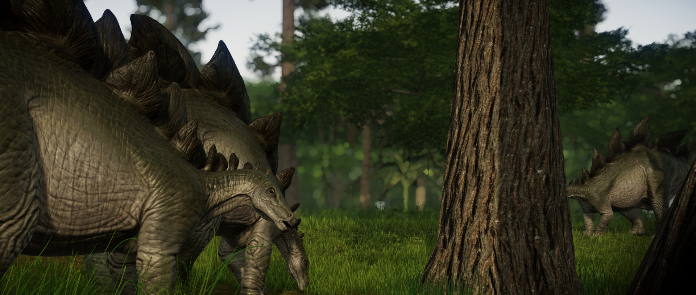

O Estegossauro é um dos dinossauros mais famosos que já existiram, graças às suas placas verticais e espetos característicos que adornam suas costas e cauda. Como ele compartilhava seu habitat com muitos grandes predadores, incluindo o Ceratossauro e o Alossauro, ele precisava de um método de defesa: os longos espetos de sua cauda permitem que ele ataque os inimigos, embora se acredite que as placas traseiras sejam para se exibir ao atrair um parceiro.